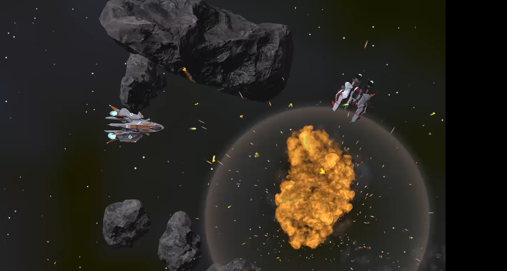
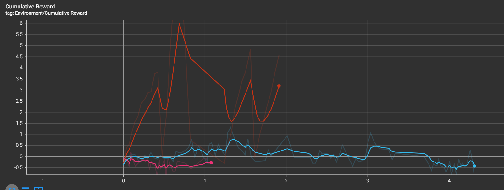
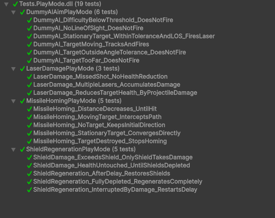

Overview
Dogfight AIsteroids extends the core movement and asteroid-physics loop of Atari's 1979 Asteroids into a modern 3D space dogfighting prototype featuring intelligent, adaptive opponents. The project investigates whether deep Reinforcement Learning can produce convincing combat AI in a continuous, physics-heavy arena, and whether Behaviour Cloning accelerates PPO convergence.
Gameplay Screenshots


Key Features
- Modernized Gameplay: Hull integrity, shields, missiles, and concussion charges expand the classic Asteroids formula.
- Baseline "Dummy" AI: A deterministic behaviour-tree pilot provides a benchmark for learning agents and early play-tests.
- Deep RL Pilot: A Proximal Policy Optimization (PPO) agent, optionally pre-trained via Behaviour Cloning from human or baseline traces, learns to pursue, evade, and survive amidst dynamic asteroid fields.
- Evaluation Pipeline: Self-play analytics, five-player user study on believability and fun, and performance benchmarks targeting 300+ concurrent AI at 60 FPS.
RL Training Visualization
The animation below captures a single PPO training episode. The agent discovers that shooting the enemy yields reward spikes, but a per-step penalty encourages shorter engagements. The ship periodically wanders (exploration) before re-engaging when the accumulated time cost outweighs idle exploration.


Testing
The Unity Test Framework (UTF) was employed for both EditMode and PlayMode tests. EditMode suites validate deterministic utilities such as path-planning, collision-damage helpers, and reward calculators. PlayMode tests spin up headless arenas to ensure health systems, BT state transitions, and RL episode resets behave as expected. CI runs all tests on every push with coverage thresholds gating merges.

Research Questions
- R1: Does PPO with BC pre-training achieve a significantly higher player kill-rate than a rule-based Dummy within 1M environment steps?
- R2: Does BC from human traces outperform BC from Dummy traces in terms of convergence speed (episodes to reach >60% win-rate)?